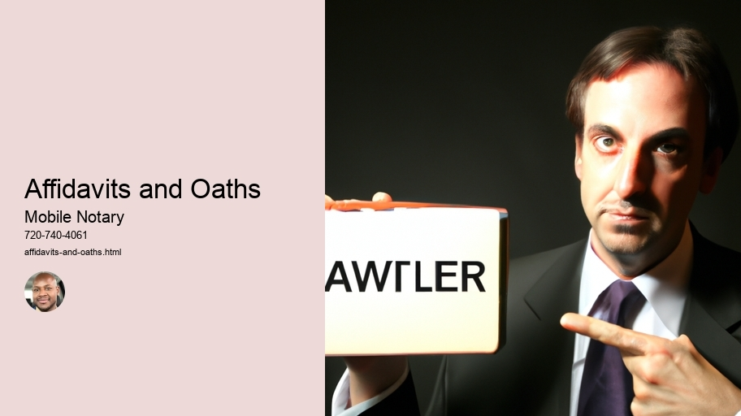

News
Notarization
Notarization
Notary Seals Stamps
Apostille Certificates
Certification of Documents
Authentication of Signatures
Verification of Identities
Affidavits and Oaths
Witnessing of Signatures
Travel Fee Reimbursement
Anotarization Fees
Power of Attorney Verifications
Mobile Notary Services
Mobile Notary Services
Remote Online Notaries RON
Video Conferencing
Electronic Signature Platforms
Digital Document Management
Document Scanning
Travel Fee Reimbursement
Mobile Printing
RealTime Document Tracking
MultiState Compliant
Background Checks
Signing Agents
Signing Agents
Notary Publics
Notary Publics
Jurats
Jurats
About Us

Affidavits and Oaths
Notarization
Notary Seals Stamps —
Notarization
Notary Seals Stamps
Apostille Certificates
Certification of Documents
Authentication of Signatures
Verification of Identities
Affidavits and Oaths
Notary seals stamps are an essential part of the notarial process! They help prove the authenticity of a document and authenticate a signatory's identity. Notary seals come in many different shapes and sizes, but all consist of a rubber stamp that is pressed onto paper and imprinted with the name of the notary public, their state seal, and other information such as their commission number. (The commission number is unique to each notary public and verifies that they are indeed in good standing with their state.)
While it may sound straightforward, there's actually quite a bit of complexity involv'd in obtaining these stamps. Firstly, you must apply for your own personal stamp from your state government. If approved, you will receive a certificate that authorizes you to use this particular seal on your documents. Once obtained, it is important to take care when using your stamp so as to avoid any potential legal issues or complications down the line.
Moreover, depending on where you live, getting a notary seal might be even more complicated than just applying for one! For example, some states have very specific requirements regarding what type of ink can be used with the notary seal stamp or how long it must last before being replaced. It's important to familiarize yourself with these guidelines before using your seal. Additionally, if you don't plan on renewing your commission after its expiration date then you'll need to make sure that any documents sealed by your stamp remain valid after that time period has passed.
In summary: Notary Seals Stamps are an integral part of the notarization process! They help verify signatures and protect documents from fraud or tampering. In order to obtain them though, one must apply for permission from their state government first - which can sometimes involve complex regulations - before using them properly afterwards! So if you're thinking about becoming a notary public then make sure to do research beforehand regarding obtaining and properly using a Notary Seal Stamp; it could save you time (and potentially money) later on down the line!
Certification of Documents
Certification of documents is an important process that many people need to go through! It involves verifying the authenticity of a document and confirming it's validity. This (can often) be (a time consuming) process, yet (it is very important to ensure that all documents are certified correctly). Generally, certifying a document means making sure that it is genuine and has not been tampered with. For example, when applying for certain jobs or visas, applicants must have their qualifications and other relevant paperwork certified by a professional.
Moreover, certification can also involve witnessing the signing of legal contracts or agreements. In such cases, an authorized person needs to approve the agreement in order for it to be legally binding. Additionally, certifying public records such as birth certificates may also be necessary in some cases.
Overall, certification of documents is an extremely pertinent procedure which should never be taken lightly! It plays a crucial role in ensuring that any official documentation is reliable and valid. Therefore, one should take great care when undertaking this responsibility in order to guarantee accuracy and avoid any potential issues down the line.(!)
Verification of Identities
Verification of Identities
Verification of Identities is an important process that ensures security for individuals and organizations. It confirms that a person is who they say they are (or aren't!). This verification can be done in multiple ways, such as verifying documents, comparing biometric data, or using multi-factor authentication techniques.
However, it's not always easy to verify somebody's identity. There may be discrepancies between the information the person gives and what is actually found during the verification process. In this case, additional steps have to be taken to ensure accuracy. For example, if there is a discrepancy between the name on a document and that given by the individual being verified, then extra evidence may be needed to confirm their identity.
Additionally, if someone doesn't have any form of identification or documentation available to them then other methods must be used for verification purposes - such as conducting interviews or checks with third parties who know the individual involved well enough to vouch for them.
Moreover, when it comes to verifying identities online there are even more challenges! Online verifications require extra security measures because hackers can easily access personal info if there are no safeguards in place. Plus (due to advances in technology) criminals have become adept at creating fake profiles and identities - making online verification processes increasingly difficult! That said; there are various methods available to help combat these issues such as two-step authentication and encryption technology which can help make sure only authorized people gain access.
Overall, Verification of Identities is an important task that helps protect us from fraudsters and other malicious actors! With proper precautions in place we can feel safe knowing our identities will remain secure!
Travel Fee Reimbursement
Traveling can be an expensive endeavor, but luckily many companies offer reimbursement for travel fees. Whether you are visiting family or attending a conference, (it) may be possible to get some of your money back! It's important to remember that not all expenses will be covered; (you'll) need to read the fine print and make sure you understand what is eligible for reimbursement.
However, don't let this deter you from taking advantage of such opportunities! With a bit of research and preparation, it can be simple to submit your request and receive money back in no time. First off, always save receipts for every expense - even if it seems minor - as these often constitute proof of purchase. Additionally, make sure to check with your employer beforehand about any policies or regulations they have in place regarding travel reimbursements.
The process itself can differ depending on the company. Generally speaking though, it involves filling out a form electronically or physically and submitting it along with all applicable paperwork. This could include flight tickets, hotel bills, gas receipts or other items which were part of your trip's cost. Once everything is submitted properly and approved by the necessary personnel there should be no issue getting reimbursed within an acceptable amount of time.
In conclusion, while seeking travel fee reimbursement may take some effort upfront preparing all the details and paperwork required; it can ultimately save you a significant sum that would otherwise have been lost! So don't hesitate - investigate what possibilities exist for your next excursion!
Anotarization Fees
Power of Attorney Verifications
Power of attorney verifications are a very important process! It is essential that the person giving the power of attorney has full understanding and knowledge of what they are signing. (This is) To ensure that their rights, as well as those of the other party, are not violated during this transaction.
Yet, in some cases, corporations or individuals may have difficulty verifying such documents. Fortunately, there are several ways for them to do so. Firstly, one can use an online system such as LexisNexis to perform background checks and validate the signature on a power of attorney document. Additionally, it's possible to send official letters to both parties requesting confirmation of the agreement and its terms.
Moreover, if there's any doubt about whether a power of attorney is valid or not then courts may be asked to adjudicate the issue. They'll consider facts like who signed it; when it was done; whether both parties were present at time of signing; and what exactly was agreed upon by each party before deciding on its validity.
Conversely, if all else fails then it's possible to dispute any decisions made with a power of attorney in court too. In these instances skilled attorneys should be consulted for advice and help in challenging such agreements effectively - even if they were previously signed by two parties in good faith!
Overall, while verifying power of attorney documents can sometimes prove difficult there are various methods available for ensuring their accuracy and legality - making sure everyone involved is protected from harm. Thus having an accurate verification process in place could save lots grieve later down the line!
Frequently Asked Questions
What is a Mobile Notary?
A Mobile Notary is an authorized individual who can perform notarial acts, such as administering oaths and affidavits, outside of their designated office.
What type of documents require an Affidavit or Oath?
Documents that require the swearing of a statement or verification of identity typically require an Affidavit or Oath administered by a Notary. Examples include passports, wills, and contracts.
How do I know if I need to use a Mobile Notary?
If you are required to swear under oath that something is true or verify your identity for certain documents, then you need to use the services of a Mobile Notary.
How much does it cost to hire a Mobile Notary?
The cost of hiring a Mobile Notary will vary depending on where you live and the type of service needed; however, most services range from $50-$200 per hour plus travel costs.
Affidavits and Oaths